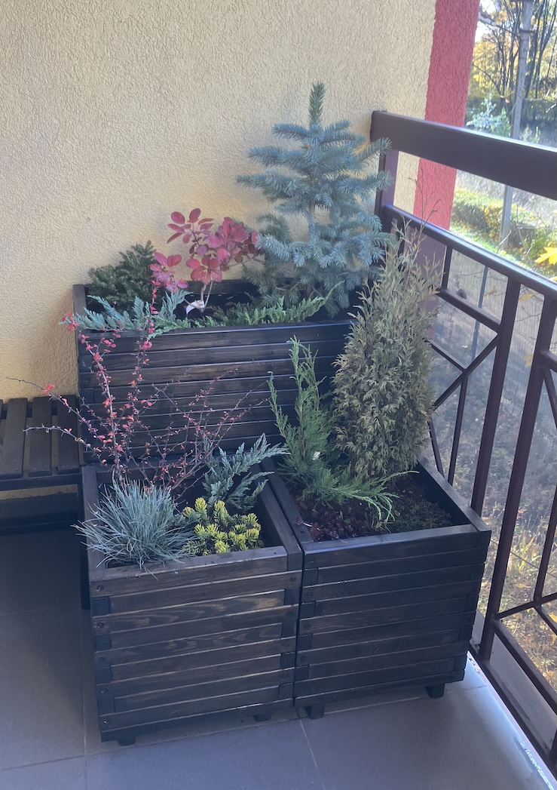
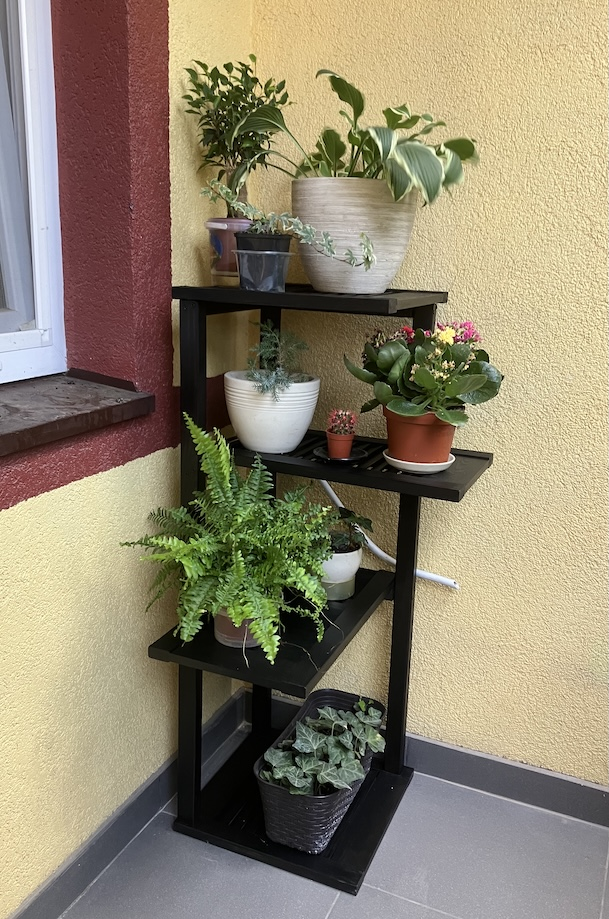

Перетворіть свій балкон на оазу затишку та стилю

Балкон — це не лише додатковий простір вашого дому, а й справжній куточок для відпочинку та натхнення. Уявіть, як ваш балкон оживає завдяки пишним квітам, витонченим композиціям із вічнозелених рослин та стильним дерев’яним меблям. Наші підставки, стенди та ящики для квітів ручної роботи допоможуть створити атмосферу, що надихає і влітку, і взимку.
Унікальність дерев’яних виробів ручної роботи
Наші стенди, підставки та ящики — це не просто функціональні аксесуари. Вони є дизайнерським акцентом, що підкреслює індивідуальність вашого простору.
- • Природна текстура дерева додає тепло і затишок, створюючи відчуття гармонії з природою.
- • Ручна робота гарантує увагу до кожної деталі та неповторний характер кожного виробу.
- • Дизайн із душею: Наші стенди мають різні рівні, що дозволяє створювати багатоярусні композиції, які виглядають як справжні інсталяції. Ящики для квітів ідеально підходять для хвойних композицій, підкреслюючи красу рослин навіть взимку.
Чарівність зелені цілий рік
Квіти та рослини додають природної краси та спокою будь-якому простору. Влітку це яскраві пеларгонії чи петунії, а взимку — хвойні рослини або вічнозелені композиції, які зберігають свіжість і затишок навіть у холодну пору року.
Створіть особливу атмосферу
Оформлення балкона за допомогою наших дерев’яних виробів дозволить вам насолоджуватися не лише красою природи, а й комфортом. Це ідеальне рішення для тих, хто цінує затишок, стиль і любов до природи.
Ваш балкон може бути саме тим місцем, де народжуються найкращі ідеї, панує спокій і гармонія. Довіртеся нашим дерев’яним підставкам, стендам та ящикам для квітів і створіть куточок, який ви завжди мріяли мати

Наші послуги
Що кажуть наші кліенти
“Дякую WoodenBloom за чудовий проєкт мого балкона! Замість звичайного складу для речей тепер маю справжній оазис із зеленню, де можу пити каву зранку. Ящики й стенди ідеально підійшли до моєї концепції!”
Катя Сафронова, Київ
“Ми давно шукали щось оригінальне для нашого балкона. Завдяки WoodenBloom усе стало на свої місця! Вони врахували всі наші побажання, і тепер балкон став улюбленим місцем для родинних посиденьок.”
Марина та Ігор, Одеса
“Мій балкон – це тепер моя гордість! Простір став функціональним, стильним і затишним. Ящики та стенди – це не тільки красиво, але й якісно. WoodenBloom, ви найкращі!”
Дмитро, Львів
“Результат перевершив очікування! Я хотіла, щоб мій балкон став зоною релаксу, і WoodenBloom втілили це в життя. Особливо вразило, як врахували всі деталі в дизайні!”
Світлана, Харків
“Замовив у WoodenBloom кілька стендів для рослин і ящики. Робота виконана ідеально: якість відмінна, дизайн сучасний і дуже стильний. Тепер я проводжу вечори на балконі із задоволенням!”